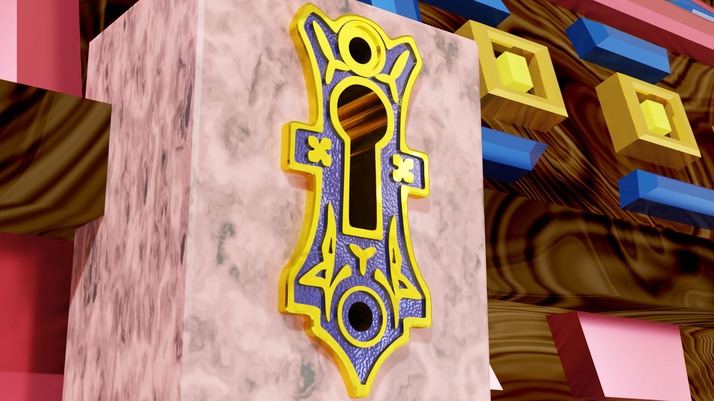

Meine Werke:
Eine kleine Vorschau meiner bisherigen 3D-Modellierungserfahrung
| Ein Turret für Valentins Tower-Defense-Game: | Eine Truhe | Und dessen Schloss |
|---|---|---|

|
 | |
| Eine Wackelpudding-Simulation (etwas zu klebrig) | Ein verrücktes U-Boot | Ein Schild |
| Ein Korallenriff | Ein Donut | Ein brennender Affenkopf |

|